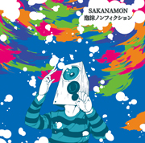

2nd Mini Album [泡沫ノンフィクション] 2012.5.16 ON SALE!

1st MA「浮遊ギミック」が異例のロングヒットが続く中、早くも2nd MAがリリース!!
疾走感あり、打ち込みあり、変則的な展開あり さらに進化したSAKANAMON流ロックが詰まった1枚!!
<収録曲>
1.「カタハマリズム」試聴
2.「淡麗アルコロニカ」試聴
3.「脳内マネジメント事情」試聴
4.「四畳一間の哲学」試聴
5.「ピラミッドの少女」試聴
※試聴/視聴には、最新の Windows Media Player が必要です。
★店舗購入 特典情報★
下記店舗にて2nd mini album『泡沫ノンフィクション』をご購入いただいたお客さまに、豪華オリジナル特典が付きます！
【タワーレコード特典】
『肴者タワレコ限定オリジナルステッカー』 （タワーレコード全店対象)
※特典は数に限りがあります。詳しくは店頭にてご確認ください。
DLCR-12051 定価:¥1,257(税込)